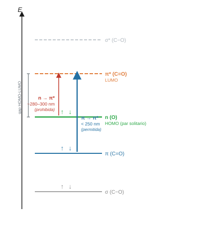

Espectroscopía UV-Vis de cetonas#
Introducción#
La absorción de radiación ultravioleta-visible induce transiciones electrónicas en las moléculas orgánicas al promover electrones desde orbitales ocupados de valencia hacia orbitales virtuales de mayor energía. Mediante la teoría del funcional de la densidad dependiente del tiempo (TD-DFT) en Gaussian, es posible simular estas excitaciones teniendo en cuenta la reorganización de la densidad electrónica. En esta práctica se calculan las longitudes de onda de absorción y las fuerzas de oscilador para las transiciones \(n \rightarrow \pi^*\) y \(\pi \rightarrow \pi^*\) en cetonas, analizando además cómo la polaridad del disolvente desplaza las bandas del espectro.
Objetivos#
Estimar la longitud de onda de absorción preliminar a partir de la diferencia de energías orbitales (\(\Delta E_{\text{gap}}\) HOMO-LUMO).
Calcular las energías de excitación vertical hacia estados singlete empleando la metodología TD-DFT con B3LYP/6-311G.
Asignar las transiciones electrónicas \(n \rightarrow \pi^*\) y \(\pi \rightarrow \pi^*\) en función de su energía y su fuerza del oscilador (\(f\)).
Cuantificar el desplazamiento solvatocrómico de la acetona en agua mediante el modelo de polarización continua del disolvente (PCM).
Comparar los espectros de absorción calculados frente a valores experimentales en función de la polaridad del medio y los sustituyentes alquílicos.
Conceptos clave#
Transiciones electrónicas en compuestos carbonílicos#
En el grupo C=O, las dos transiciones relevantes son la \(n \rightarrow \pi^*\), en la que un electrón del par solitario no enlazante del oxígeno pasa al orbital antienlazante \(\pi^*\) del carbonilo, y la \(\pi \rightarrow \pi^*\), en la que el electrón parte del orbital enlazante \(\pi\) del doble enlace. La transición \(n \rightarrow \pi^*\) aparece en torno a 280–300 nm y tiene intensidad baja; la \(\pi \rightarrow \pi^*\) se sitúa por debajo de 250 nm y es mucho más intensa. Esta diferencia de intensidad se refleja en la fuerza del oscilador \(f\): valores próximos a cero para la \(n \rightarrow \pi^*\) y del orden de 0.1–1 para la \(\pi \rightarrow \pi^*\).


El gap HOMO-LUMO como estimación preliminar#
La diferencia entre la energía del HOMO y la del LUMO proporciona una estimación directa de la energía mínima de excitación. Convertida a electronvoltios y a longitud de onda, anticipa la región espectral de absorción antes de ejecutar el cálculo completo. Esta estimación sobreestima sistemáticamente la energía de transición porque no tiene en cuenta la relajación del estado excitado.
Efecto del disolvente: solvatocromismo#
En la transición \(n \rightarrow \pi^*\), el estado fundamental del carbonilo es más polar que el estado excitado. Un disolvente polar estabiliza preferentemente el estado fundamental, amplía la diferencia de energía entre los dos estados y desplaza la banda hacia longitudes de onda menores (efecto hipsocrómico o desplazamiento al azul). Gaussian modela este efecto mediante el modelo de polarización continua PCM, que representa el disolvente como un medio dieléctrico homogéneo caracterizado por su constante dieléctrica. Para especificarlo se añade la palabra clave scrf=(solvent=nombre) en el campo Additional Keywords.
Valores experimentales de referencia para acetona:
Disolvente |
\(\lambda\ (n \rightarrow \pi^*)\) experimental (nm) |
|---|---|
Ciclohexano (apolar) |
279 |
Agua (muy polar) |
264 |
Variación (\(\Delta \lambda\)) |
−15 nm (desplazamiento al azul) |
Nota
El desplazamiento solvatocrómico al azul (hipsocrómico) en la transición \(n \rightarrow \pi^*\) deriva de la diferente polaridad de los estados electrónicos implicados. En el estado fundamental (\(S_0\)), el grupo carbonilo posee un momento dipolar elevado y los pares solitarios del oxígeno forman enlaces de hidrógeno con disolventes polares próticos como el agua. Durante la transición electrónica, la redistribución de carga hacia el sistema \(\pi^*\) disminuye el momento dipolar en el estado excitado (\(S_1\)), lo que reduce la estabilización por solvatación y aumenta la energía necesaria para la excitación vertical.
Procedimiento#
Parte A: Estimación preliminar con el gap HOMO-LUMO#
Paso A1: Optimizar la geometría en disolvente#
Construir la acetona en GaussView y aplicar Edit → Clean.
Abrir Calculate → Gaussian Calculation Setup, seleccionar Job Type → Optimization e introducir los parámetros:
Campo |
Valor |
|---|---|
Method |
|
Basis Set |
|
Charge |
0 |
Spin |
1 |
Additional Keywords |
|
Guardar como
acetona_MeCN_opt.gjfen{{practicas_folder}}EspectroscopiaUV/y lanzar.
Paso A2: Extraer autovalores HOMO y LUMO#
En el archivo
.logde la optimización (acetona_MeCN_opt.log), buscar con Ctrl + F el texto:Alpha occ. eigenvalues.Identificar el último valor numérico de la última fila
Alpha occ.correspondiente a la energía del orbital HOMO (\(\varepsilon_{\text{HOMO}}\) en hartrees).Identificar el primer valor numérico de la fila siguiente
Alpha virt. eigenvaluescorrespondiente a la energía del orbital LUMO (\(\varepsilon_{\text{LUMO}}\) en hartrees).Calcular la diferencia energética \(\Delta E_{\text{gap}} = (\varepsilon_{\text{LUMO}} - \varepsilon_{\text{HOMO}}) \times 27.2114\) en eV.
Estimar la longitud de onda de absorción: \(\lambda_{\text{estimada}} = 1239.8 / \Delta E_{\text{gap}}\text{ (eV)}\) en nm.
Anotar los valores numéricos obtenidos en la Tabla A de resultados.
Parte B: Cálculo TD-DFT del espectro de absorción#
Paso B1: Configurar el cálculo TD-DFT#
En GaussView, abrir el archivo de geometría optimizada anterior (
acetona_MeCN_opt.logo el correspondiente.chk) mediante File → Open.Acceder al menú Calculate → Gaussian Calculation Setup.
En la pestaña Job Type, seleccionar Energy (cálculo de punto único sobre la estructura de equilibrio).
En la pestaña Method, mantener Method B3LYP, Basis Set 6-311G, Charge 0, Spin 1.
En la pestaña Title, escribir:
Acetona TD-DFT B3LYP 6-311G MeCN.En el campo inferior Additional Keywords, escribir:
td scrf=(solvent=acetonitrile) geom=connectivity.Pulsar Submit, guardar como
acetona_MeCN_td.gjfen{{practicas_folder}}EspectroscopiaUV/y confirmar el cálculo con Save y Submit.Verificar la presencia de la línea final
{{termination_ok}}en el archivo.log.
Paso B2: Extraer datos de los estados excitados del .log#
Abrir el archivo
.log(acetona_MeCN_td.log) en el editor de texto.Buscar con Ctrl + F la cadena:
Excited State 1.Extraer los datos cuantitativos del primer estado excitado singlete:
Longitud de onda calculada (\(\lambda\)) en nanómetros (nm).
Energía de excitación en electronvoltios (eV).
Fuerza del oscilador (\(f\)).
Observar las líneas de orbitales asociadas a la transición (origen y destino) para confirmar el tipo de excitación.
Identificar la banda de menor fuerza de oscilador en torno a 270–300 nm como la transición \(n \rightarrow \pi^*\).
Paso B3: Visualizar el espectro en GaussView#
En GaussView, abrir el archivo
acetona_MeCN_td.logmediante File → Open.Acceder al menú Results → UV-Vis.
Examinar el espectro electrónico sintético generado:
Las barras verticales indican las transiciones discretas, con altura proporcional a la fuerza del oscilador \(f\).
La curva continua muestra el perfil convolucionado.
Identificar la banda débil \(n \rightarrow \pi^*\) frente a la banda intensa \(\pi \rightarrow \pi^*\) a longitudes de onda inferiores a 250 nm.
Parte C: Serie de disolventes y solvatocromismo#
Repetir el cálculo TD-DFT de la acetona sobre la geometría ya optimizada, cambiando únicamente la palabra clave de disolvente en Additional Keywords:
Disolvente |
Additional Keywords |
|---|---|
Vacío (gas) |
|
Ciclohexano |
|
Cloroformo |
|
Etanol |
|
Acetonitrilo |
|
Agua |
|
Guardar cada archivo con nombre descriptivo en {{practicas_folder}}EspectroscopiaUV/ y extraer \(\lambda\) y \(f\) de Excited State 1 en cada .log.
Parte D: Serie de cetonas sustituidas#
Repetir el procedimiento completo (optimización + TD-DFT en acetonitrilo) para los cuatro compuestos siguientes:
Compuesto |
Estructura |
|---|---|
Cloruro de acetilo |
CH₃–CO–Cl |
Acetofenona |
CH₃–CO–C₆H₅ |
Ácido acético |
CH₃–CO–OH |
Metil-etil-cetona |
CH₃–CO–CH₂CH₃ |
Para cada uno, extraer \(\lambda\) y \(f\) de Excited State 1 y comparar el desplazamiento de la banda \(n \rightarrow \pi^*\) respecto a la acetona.
Bibliografía#
Gaussian 16, Revision A.03, M. J. Frisch, G. W. Trucks, H. B. Schlegel et al., Gaussian, Inc., Wallingford CT, 2016.
Atkins, P.; De Paula, J. Química Física, 10ª ed.; Editorial Médica Panamericana, 2018. Cap. 13 (Espectroscopía electrónica).
Casida, M. E. Time-Dependent Density Functional Theory for Molecules. In Recent Advances in Density Functional Methods; World Scientific, 1995.
NIST Chemistry WebBook, https://webbook.nist.gov (espectros de absorción ultravioleta-visible de referencia).
Para ir más lejos (opcional)
GaussView muestra cada transición calculada como una barra discreta con altura proporcional a \(f\). Para obtener un perfil continuo comparable al espectro experimental, convolucionamos esas barras con funciones gaussianas de anchura apropiada. Exportando la lista de estados excitados del .log a una hoja de cálculo y aplicando la convolución, podemos reproducir la forma de banda y comparar la posición de los máximos con los datos del NIST Chemistry WebBook.